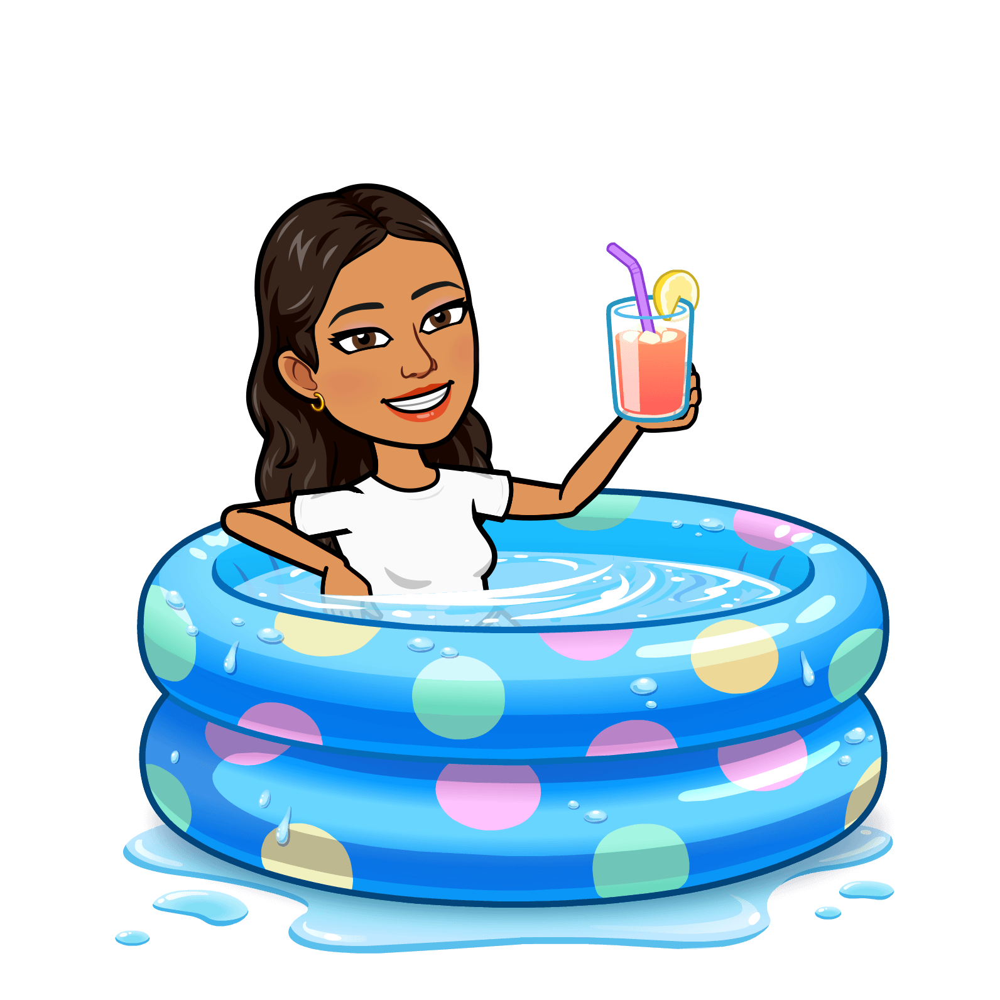

Work 💼
Currently designing for UC Davis Transportation Services, creating a more positive parking experience for all campus visitors. Previously, I've gotten to work on a number of diverse projects at companies like Commvault, Volt SMS, and RadicalAI. Currently pursuing a double major in Cognitive Science and Design @ UC Davis (expected March 2025).
Play 🤸♀️
Away from my computer, I enjoy swimming (leisurely and competitively!), cooking (and eating) gluten-free alternative recipes, experimenting with fashion (through thrifting and reselling clothes), relaxing by the beach, and going on adventures with friends!
Community 🏘️
I have gained 3+ years of valuable experience through participation in on-campus student organizations which have played a crucial role in developing the skills that have brought me to where I am today. I began my journey in Design Interactive, a UX Design Consultancy where I was able to participate in 3 design challenges: redesigning Hinge, making a Bike Tools App, and creating a Social Reading Platform. From there, I joined a product development organization called AggieWorks that builds products for students: I was the founding product designer of AggieExchange, UC Davis’s first student marketplace platform. Most recently, I was a member of CodeLab, another design/software-engineering organization, where I worked in a small cross-functional team on a demo project for a startup. This fall, I am going to be a mentor for Product Space @ UC Davis where I will advise students looking to break into product, specifically Product Design and UI/UX.


From Left to Right: Design Interactive Fall '23, AggieWorks Spring '23, AggieWorks Fall '23, CodeLab Winter/Spring '24
Shiny Things ✨
-
Commvault Intern Project Winner (2024)
- Voted Best Intern project (1st out of ~40) for a project focusing on Accessibility within Commvault products
-
Best Storytelling & Audience Choice (2023)
- Awarded 'Best Storytelling' and 'Audience Choice' for a 6-week UX design project focused on creating a social book platform
-
Dean’s List (2023)
- GPA in the top 16% of the College of Letters and Science
-
Most Innovative UX (2022)
- Awarded 'Most Innovative UX' for successfully completing and presenting a 2-week Bike Tools App concept to a panel of judges and audience
Tools 🛠️
- Accessibility
- AfterEffects
- Figma
- HTML/CSS
- Illustrator
- InDesign
- JavaScript
- Photoshop
- User Research
- User Testing
- Visual Design
- WCAG